| Excel |
Formulas Menüsü(Fonksiyonlar) |
7 |
Dizi Formülleri ve Sumproduct
Buraya kadar konuları sırayla okuyarak geldiyseniz şimdi formüllerde
ustalaşma zamanınız geldi demektir. Çünkü burada artık olmayanı görme,
zihninizde canlandırma kabiliyeti kazanacaksınız.
Bu formüllerle birkaç aşamada, genelde yardımcı kolonlar aracılığıyla, yaptığınız işlemleri tek bir formülle yapar
hale geleceksiniz. Bu sitede çeşitli yerlerde belirttiğim gibi, o anki
ihtiyaca göre bazen şık olmayan ama daha hızlı olan yöntemi seçmek gerekebilir. Yani
uzun uzun dizi formülü yazmak yerine geçici bir pivot table veya başka araçlarla daha hızlı
ilerleyeceğinizi düşünüyorsanız ve aciliyetiniz de varsa öyle ilerleyin. Ama
mesela kalıcı bir
dashboard/karne/scorecardv.s tasarlıyorasnız veya çıktı alınacak bir sayfa üzerinde
çalışıyorsanız veya bulduğunuz değeri başka bir formül içinde kullanacaksanız işinizi
tek seferde bitirmeye çalışmanız gerekecektir, ki bu durumların çoğunda bu
sayfada öğrendiklerinizi kullanabilirsiniz.
Sayfa başlığında olmamakla birlikte Veritabanı fonskiyonlarını
da konu
bütünlüğü açısından burada ele alıyor olacağız.
NOT:Örneklerin birçoğunda normal hücre
alanlarından(range) ziyade kolay anlaşılırlık adına
Table veya
Name'ler
kulanılmış olup, bu konularda bilgi sahibi değilseniz öncelikler
bunları incelemenizi tavsiye ederim.
Bu sayfadaki örneklerin hepsini bulacağınız örnek dosyayı
buradan indirebilirsiniz. Ayrıca Microsoftun
şu sayfasında da dizilere ait detaylı bilgiler bulabilirsiniz, gerçi ben
oldukça detaylı bir içerik hazırladım ama yine de gözatmak isteyen meraklı
kullanıcılar bakabilirler.
Dizi Formülleri
Nedir?
Birden çok değerden oluşan
kümelere dizi, bu dizileri kullanan formüllere de dizi formülü diyoruz.
Dizi formülleri ikiye ayrılmaktadır:
- Tek hücreye girilen ve tek değer
döndüren formüller. Bunlar da kendi içinde üçe ayrılalır.
- Doğal dizi formülleri(SUM, AVERAGE gibi dizi kabul eden ama
aslında dizi formülü olmayan formüller)
- Control + Shift + Enter(CSE) tuş
kombinasyonuyla girilen dizi formülleri
- SUMPRODUCT gibi parametre olarak her zaman birden çok dizi
alıp bunlarla işlem yapan veya INDEX, OFFSET gibi bazen dizi formülü
şeklinde davranan yerel fonksiyonlar. Bunlar CSE'ye ihtiyaç
duymazlar
- Çoklu hücre grubuna girilip çok değer döndüren
fomrüller. Bunlar da kendi içinde birkaç gruba ayrılır
- Yerel Excel fonksiyonları(TRANSPOSE, LINEST v.s)
- Yine CSE kombinasyonuyla manuel girilen formüller
Detaylar
Diziden kasıt, tek bir eleman değil de bir
grup elemandır. Mesela bir
formülün girdisi olarak 1 sayısını ele alalım. Bu tek bir değerdir. Ancak
bazen 1 ve 2 nin aynı anda formüle girmesini isteriz. İşte böyle bir durumda
dizi formülü kullanırız.
Dizi elemanları formüle manuel olarak girilebileceği gibi, bunları
döndürecek başka bir formülle birlikte de girilebilir, veya belirli bir alan
seçilebilir. Son olarak formül girişi bitince CTRL+SHIFT+ENTER(CSE)
tuş kombinasyonuna basılır. Bu tuşlara basıldıktan sonra formül
süslü parantezler yani "{ }" karakterleri arasına sarmalanır.
Bu süslü parantezlerin elle girilmemesi çok önemli, yoksa hata
alırsınız. CSE'ye basınca kendiliğinden gelirler.
Örnek girişleri aşağıdaki gibi gösterebiliriz
- Sabit giriş:{1;2;5;10} ({ } ile manuel girilenlerde CSE yapmaya
gerek yoktur)
- Hücre referansı:A2:A10
- Formül sonucu:TRANSPOSE(A2:A10)
1.Kullanım şekli:Çok sonuç döndürme
Çoklu sonuç döndürmek için belirli bir alanı seçip oraya tek bir formül
gireriz ve sonra CSE tuşuna basarız. Aşağıdaki görüntüde C2:C11 seçilmiş,
hepsine A2:A11*B2*B11 formülü girilip CSE tuşlarına basılmıştır. Böyle bir
kullanımda tüm hücrelerde aynı formül yer alır. Dizi formülü içieren
hücrelerden herhangi biri silinemez veya değiştirilemez, değiştirilmesi
teklif dahi edilemez. Silmek için hepsini birden seçip silmelisiniz.
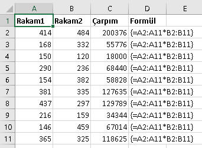
Avantaj
Bu kullanım şeklinin en büyük avantajı, Excelin tek bir formülü hesaba
katmaya çalışmasıdır. Yukardaki örneğin alternatifi ne olurdu? C2 hücresine
A2*B2 girip onu aşağı doğru kaydırmak. Ama bu durumda 10 çeşit formül olurdu
ve Excel bu 10 formülü ayrı ayrı hesaplardı. Az sayıdaki satırlar için önemsiz
bir detay olabilir ama çok satırlı dosyalarda büyük performans katkısı sağlar.
Özellikle calculation işleminin geçici olarak durudulup tekrar açıldığı
durumlarda çok faydalı olabilir. Ayrıca diskte de daha az yer kaplar. 5000 Dikey eksenden oluşan bir kümeyi dizi formülü ile
kaydettiğimde 137 KB yer kaplarken, klasik formül
girip aşağı kaydırarak kaydedince 159 KB yer kaplamaktadır.
NOT:Aşırı fazla dizi formülü ise tam tersi etki yaparak performans sorunu
yaratır. O yüzden Genel Değerlendirme bölümüde belirtildiği üzere dikkatli
kullanılmalıdırlar.
Transpoze işlemi
Dikey konumdaki A2:A10 arasındaki değerleri yatay şekilde(veya
yataydakileri dikey şekilde) bir yere yazdırma işlemi bir dizinin
transpozesini almak diye adlandırılır. Yatay veya dikey dönüşüm için
TRANSPOSE fonksiyonu kullanılır.
Aşağıdaki J1:J3 arasındaki değerleri L1:N1 arasına girmek için L1:N1
seçilip ve aşağıdaki formül girilir.
={TRANSPOSE(J1:J3)}
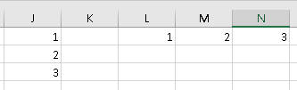
Formülü değiştirmek
Dizi formülleri değiştirilmek istendiğinde tüm blok seçilir, sonra F2
tuşuna basılarak ilk hücrenin içindeki formül değişim moduna getirilir,
değişiklik yapılır ve yine CSE kombinasyonuna basılır.
2.kullanım şekli:Tek hücre girişi
Benim dizi formüllerinde ağırlık vermek istediğim versiyon aslında bu versiyondur. Önce bu kullanım şeklinin neyin alternatifi olduğunu görelim.
Yukardaki örneği düşünün. Çarpım
kolonundaki rakamların toplanmasını isteseydik, bunları toplamamız
gerekirdi. Yani önce C kolonunda A ve B'yi çarpıp sonra da bunları
toplayarak 2 iş yapardık. Bunun yerine şu formül işimizi görecektir.
{=SUM(A2:A11*B2:B11)}
Aslında bu işlem için başka bir fonksiyon var: SUMPRODUCT, bunu aşağıda
ayrıca
göreceğiz.
Başka bir örneği inceleyelim. Yine Dizi formüllerinin olmadığı
dünyadayız, şimdi yukarıdaki rakamların yanına bir de fark kolonu ekleyelim
ve bunlardan en küçüğünü MIN(D2:D12) ile bulalım. Sonuç: -140
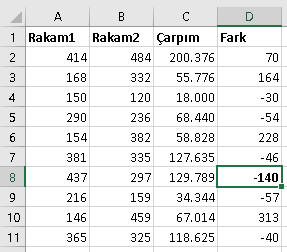
Dizi formüllerinin olduğu bir dünyada ise bunu şu dizi formülü ile elde ederiz.
{=MIN(B2:B11-A2:A11)}
F9 tuşu
F9 tuşu ile formül editleme modundayken formülün bir kısmını seçip
sadece o kısmın sonucunu görebiliyoruz. Bu tuşu daha çok uzun formüllerde
belli bir kısmın ara sonucunu görmek için kullanırız. Aynı mantıkla dizi formüllerinde
de belli bir kısmın döndürdüğü diziyi görmek
adına da kullandığımızda oldukça faydalı olmaktadır. Özellikle dizi
formüllerini yeni öğrenirken bunu sık sık kullanıp eldeki dizinin neye
benzediğini görmeniz açısından kritik bir ihtiyaçtır.
Mesela şu formüldeki ilgili kısmı seçip,
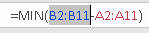
F9'a basınca sonuç aşağıdaki gibi olmaktadır
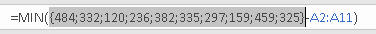
VE/VEYA operatörleri ile Boolean(TRUE/FALSE) işlemler
Konuşma dili vs Formül dili
Konuşma dili ile kasttetiğimiz şey her zaman formül diline aynı şekilde
girilmediği için bu farktan bahsetmek istedim. Eğer hali hazırda SQL ile
veya Business Objects gibi bir raporlama aracıyla rapor çekiyorsanız kriter
alanına değerleri girerken bu farka dikkat etmiş olmalısınız.
Şimdi, formül dilindeki VE, konuşma dilinde iyelik eki olarak düşünülmelidir.
Konuşma dlindeki "Akdeniz bölgesinin 2010 satışları"
formülde "Bölge=Akdeniz VE
Yıl=2010" olarak işleme girilir.
Keza formül dilindeki VEYA ise konuşma dilinde garip bir şekilde
"ve" olarak kullanlmaktadır. O yüzden burdaki karışıklığa özel dikkat etmeniz
gerekir. Mesela konuşma dilince "2010 ve 2011" satışları
derken formüle "Yıl=2010 VEYA Yıl=2011" satışları olarak girilmelidir.
İkisinin karışımına da örnek verebiliriz. Akdeniz bölgesinin 2010
ve 2011
satışları dersek, Bölge=Akdeniz VE (Yıl=2011
VEYA Yıl=2012) şeklinde işleme girecektir.
VE/VEYA operatörleri
Yukarda anlatılan VE işlemini parantezler arasında "*" işareti ile
sağlarken VEYA işlemini "+" işareti ile sağlarız. Bu şekilde bu dizide
ilgili koşulları sağlayan kaç eleman olduğunu bulmuş oluruz. Eğer formül
içinde çarpılıp toplanacak sayısal bir blok yok ise dizi formülleri bu
haliyle COUNTIF(S) alternatifi olarak karşımıza çıkar. Sayısal blok da işleme
girerse o zaman da SUMIF(S) alternatifi olur.
Şimdi aşağıdaki örnek üzerinden gidecek olursak(Örnek tabloda Ürün3 de
vardır, ancak resim uzun çıkmasın diye biraz kırptım);
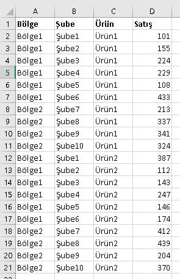
Önce VE örneğine bakalım: Bölge1'in şube sayısı:
=SUM((bölgeler="Bölge1")*(ürünler="Ürün1"))
//veya aynı formül sum+if ile aşağıdaki gibi iyazılabilir
=SUM(IF((bölgeler="Bölge1")*(ürünler="Ürün1");1))
Bölge1in Ürün1deki toplamı
=SUM((bölgeler="Bölge1")*(ürünler="Ürün1")*satışlar)
Bölge1in, Ürün1 ve 2 toplamı ise
=SUM((bölgeler="Bölge1")*((ürünler="Ürün1")+(ürünler="Ürün2"))*satışlar)
Bu örneklerde sondaki "satışlar" olmazsa COUNTIFS, olursa SUMIFS işlemi
yapılmaktadır.
Nasıl işliyor?
Aritmetik işlemlerde BOOLEAN değer(yani TRUE/FALSE) döndüren sonuçlar
sırayla 1/0 değerlerine dönüştürülür. Bilindiği gibi 0'la çarpım hep 0'dır, 1'le çarpımlar da
çarpılan değerlerin toplamını verir. Eğer çarpılanlar yine 0/1den oluşan
dizilerse sonucun COUNTIFS, sayısal blok çarpılıyorsa da SUMIFS olduğunu
belirtmiştik.
Mesela yukardaki son örnekte "bölgeler=Bölge1" eşitliğini F9 ile çözümlemeye
çalıştığımızda aşağıdaki gibi görürüz.
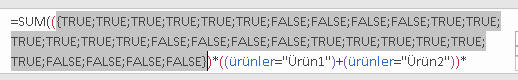
Bunların sayısal karşılığı 1/0 ama bunları şu
anda F9 ile göremiyoruz. Bunları 1/0 görmek için biraz aşağıdaki teknikleri uygulamanız lazım gelir. İlgili
tekniklerden biri uygulandığında çıkan sonuç aşağıdaki gibidir.
{1;1;1;1;1;1;0;0;0;0;1;1;1;1;1;1;0;0;0;0;1;1;1;1;1;1;0;0;0;0}
Ürünlü kısmın 0/1 karşılığı ise şöyledir:
{1;1;1;1;1;1;1;1;1;1;1;1;1;1;1;1;1;1;1;1;0;0;0;0;0;0;0;0;0;0}
Satışların ise zaten direkt kendisi gelir:
{101;155;224;229;108;433;213;337;341;324;387;112;143;247;146;174;412;439 ;204;370;327;212;329;232;341;267;268;355;252;386}
Son olarak da tüm bunlar birbiriyle çarpılır, çarpımda 0 olan kısımlar
elenir, geriye sadece 1*1*SatışRakamı olan kısımlar kalır ve bunlar
toplanır. Örneğin ilk grup 1*1*101 şeklinde
hesaba girer.
TRUE/FALSE'ı sayısal değere çevirme yöntemleri
TRUE ve FALSE'ın sayısal karşılığının 1 ve 0 olduğunu görmüştük. Bunu
yukarda doğrudan koşullu ifadelerin parantezler içinde çarpımı örneğinde gördük. Çarpımın olmadığı
ve parametre ayracı olan ";" ile kullanıldığı durumlarda ise aşağıdaki yöntemler uygulanır.
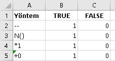
İlk yöntemde -- ifadesi aslında iki kere -1le çarpım anlamına
gelmektedir, yani ifadeyi aritmetiksel bir işleme tabi tutunca 1/0 haline
dönüşmektedir. 3. ve 4. yöntemde de benzer mantık bulunmaktadır. 2. yöntem
ise direkt bu amaçla üretilmiş bir fonksiyon olup TRUE/FALSE'ları 1/0'a
çevirir.
Şimdi aşağıdaki tabloya bakalım.
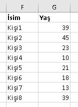
18'nden büyük olan kaç kişi var diye bakacağız.
=SUM(--(G2:G9>18))
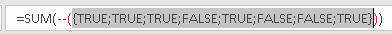
--'yi de kapsayacak şekilde seçip F9 yaparsak 1/0 karşılıkları görünür.
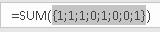
Sonuç 5 olacaktır.
IF'li formüller
Aşağıdaki tabloya göre Mağaza1'in toplam satış tutarını bulmak
SUMIF fonksiyonu ile oldukça kolaydır. SUMIF'in olmadığı bir
dünyada(gerçi hemen herkesteki Excel versiyonu bu formülü destekler diye
düşünüyorum) ise bunun alternatifi nasıl yazılır ona bakalım.
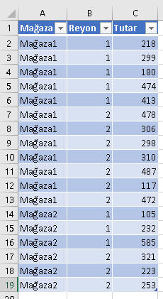
{=SUM(IF(Table2[Mağaza]=F3;Table2[Tutar]))}
Gördüğünüz gibi SUMIF'e oldukça benzemekte. Evet, artık herkeste SUMIF
vardır diyoruz ama peki ya MINIF? Böyle bir fonksiyon
2016'ya kadar gelmedi. 2016'daki de MINIF değil çoklu kriteri desteklemesi
adına MINIFS olarak geldi(Office 365 paketi değilse Excel
2016 olsa bile bu formül desteklenmez)
O halde tek alternatifimiz dizi formülü yazmak olacaktır.
=MIN(IF(Table2[Mağaza]=F3;Table2[Tutar]))
IF'li kısım bize
{218;299;180;474;413;478;306;298;310;487;117;472;FALSE;FALSE;FALSE;FALSE;FALSE;FALSE}
dizisini döndürür, sonra MIN ile de bunlardan en küçüğünü elde ederiz.
Ekli dosyada MAXIF, SMALLIF MINIFS alternatifleri de bulunmaktadır.
Ardışık sayı üretmek
Özellikle SMALL ve LARGE başta olmak üzere bazı fonksiyonlarda 1 ile X arası
ardışık sayıları kullanmak gerekebilmektedir. Bunlar az ise elle {1;2} gibi
girilebilir. Ancak çoksa veya sayısı baştan bilinmeyip başka hücrelerdeki
değerlere göre dinamik olarak belirleniyorsa başka bir çözüm bulmamız gerekir.
Bu amaç için ROW fonksiyonunu dizi şeklinde kullanırız. Mesela aşağıdaki
formülü K8:K10 arasına girip CSE yaparsak bize sırayla 1,2,3 değerlerini
verir.
{=ROW(1:3)}
Ancak bu yöntemin bi sakıncısı var, o da A1:A3 arasına bir satır açılırsa
bu formül sapıtır. Kendiiniz de deneyip görebilirsiniz. Mesela en tepeye, 1.satırın üstüne
yeni kolon açılırsa az önce 1,2,3 gördüğümüz değerle3 2,3,4 olur.
İşte bu sapma olmasın diye INDIRECT fonksiyonunu da formüle dahil ederiz.
=ROW(INDIRECT(1&":"&3))
Bunun kullanımıyla ilgili bir örneği aşağıda çeşitli örneklerin bulunduğu
kısımda görebilirsiniz.
NOT:Eğer sonucu dikey eksene yazdıracaksanız veya dikey eksendeki bir
bölgeye kriter olarak sokacaksanız ROW, yatay eksende
kullanacaksanı COLUMN kullanırsınız.
Rakamların yönü
Bu ön bilgiyi şimdi veriyorum, ancak şuan için birşeyi fade etmemesi çok
yüksek. Sadece şağıdaki örnekeri görürken, niye burda böyle de şurda şöyle
diye soracağınızı tahmi nettiğim için şimdiden vermek isteim. O örneklere
geldiğinizde daha iyi bir kavrayış iin bu kısma tekrar gelip bakın.
- Çoklu değerler girilirken manuel girilirlerse { } işaretleri arasına
";" ayracıyla ayrılarak girilirler.
SUM(SUMIF(Tablo[Bölge];{"Bölge1";"Bölge2"};Tablo[Satış]))
- Eğer giriş manuel değil de bir hücre grubundan alınacaksa
- İfadeler ";" parametre ayracıyla giriliyorsa hücre grubunun yönü
önemli değildir.
Yatay:=SUM(SUMIF(Tablo[Bölge];G49:H49;Tablo[Satış]))
Dikey:=SUM(SUMIF(Tablo[Bölge];G51:G52;Tablo[Satış]))
- İfadeler "*" işaretiyle çarpılacaksa hücre grubunun yatay olması
gerekir. Dikey hücre grupları TRANSPOSE edilmelidir.
Yatay:=SUMPRODUCT((Tablo[Bölge]=G49:H49)*(Tablo[Satış]))ış]))
Dikey:=SUMPRODUCT((Tablo[Bölge]=TRANSPOSE(G51:G52))*(Tablo[Satış]))
Dinamik Diziler(Yeni!!!)
Eylül 2018'de Micorosft efsane bi işe imza attı. Hesaplama motorunu değiştirdi. Ve Excel kullanıcılarının hayatını kökten değiştirecek bir yapıyı hizmete soktu. Dinamik Diziler(Dynamic arrays)
Öncelikle şunu belirteyim, bu özellikten sadece Office 365'i olan kullanıcılar faydalanabiliyor. O yüzden maalesef ben dahi bunu 2 yıl sonra farkedebildim. Zira iş yerimdeki PC'mde Office 365 kurulu değil.
Peki nedir bu dinamik diziler, ne işe yarar? Aslında bizi iki şeyden kurtarıyorlar: Dizi formülü yazarken hedef alanı uygun sayıda hücre olacak kadar seçmekten ve CSE kombinasyonuna basmaktan. Siz formülü yazdığınızda formül otomatikman aşağı "dökülüyor". Evet buna dökülmek(spill) diyorlar. FILTER, SORT, UNIQUE gibi efsane fonksiyonlar da cabası. Aşağıda bunların nasıl çalıştığını gif animasyon olarak görebilirsiniz. Ben örnek olarak UNIQUE'i aldım. Siz de diğerlerini deneyebilirsiniz. Şu an çok detaylarına girecek vaktim yok ancak bi ara hepsi için detaylı örnekler koymayı düşünüyorum. O zamana kadar Microsoft'un kendi sayfasından ve/veya diğer kaynaklardan faydalanabilirsiniz.

SUMPRODUCT
SUMPRODUCT size ilk başta o kadar da ahım şahım bir fonksiyon gibi
gelmeyebilir, ama Excel'in dizilerle nasıl çalıştığını anladıktan sonra
bu fonksiyonun da hakkını vermeye başlıyorsunuz.
Öncelikle SUMPRODUCT kendi başına bir dizi formülüdür. Yani bir formül
oluşturduktan sonra CSE kombinasyonuna basmanız gerekmez. Aslında tek bir
kullanım şekli olmakla birlikte ben tamamen kendi kafama göre 2 gruba ayırdım; Klasik ve klasik olmayan
kullanımı diye.
Klasik kullanım
Diyelim aşağıdaki gibi Kredi tutarı ve faiz oranlarından oluşan bir liste
var, ve siz ağırlıklı ortalama faizi bulmak istiyorsunuz. Aritmetik ortalama
alırsanız hata yaparsınız, zira içerde büyük hacimli ama düşük faizli bir
kredi varsa genel toplamı aşağı çekmesi gerekir. Fakat aritmetik ortalama, hacimlerin
büyüklüğünü
dikkate almadığı için yanıltıcı olacaktır. O yüzden aritmetik ortalama
yerine ağırlıklı ortalama alınması gerekmektedir.
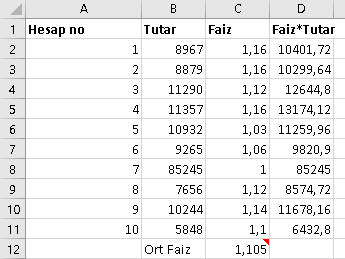
Ağırlık ortalama için SUMPRODUCT'ın olmadığı dünyada D kolonunda yardımcı
bir kolon açılıp Faiz*Tutar çarpımı bulunur, Sonra D kolonunun toplamı B kolonunun
toplamına bölünür.
=SUM(D2:D11)/SUM(B2:B11)
İşte SUMPRODUCT sizi bu yardımcı kolondan kurtarır.
=SUMPRODUCT(B2:B11;C2:C11)/SUM(B2:B11)
Fonskiyonun yaptığı iş bu dizileri çarpıp toplamaktır. Yukarıdaki
örnekte her satırdaki Faiz ve Tutarı çarpıyor ve bütün bu çarpımları
topluyor.
Gördüğünüz üzere SUMPRODUCT parametre olarak diziler alıyor ve tüm diğer
fonksiyonlarda olduğu gibi parametre ayracı olarak ";" işaretini kullanıyor.
Ancak SUMPRODUCT'ı VE operatörü olan "*" ile de kullanabiliyoruz.
Ve operatörü kullanıyor olmak demek, koşul arıyouz demektir, yani diziyi
formüle olduğu gibi sokmak yerine belli koşulda olanları istiyoruz
demektir. Gerçi "*" ile kullanıldığında koşul belirtilmese de yine
çalışır ama bu şekilde anlamsızdır, zira bunun için ";" versiyonu zaten
vardır. Bu arada ";" ile kullanıdığında diziler parantez içine alınmazken "*" ile
kullanıldığında parantez içine alınırlar.
=SUMPRODUCT((B2:B11)*(C2:C11))/SUM(B2:B11)
Klasik olmayan kullanım şekil
Şimdi fonksiyonumuz buraya kadar gereksiz görünebilir, zira "*" versiyonunun
yaptığı işi SUM
fonksiyonunu dizi formülü olarak kullanarak da gerçekleştirebilirdik. Hatta yukarıdaki
örneklerinden birinde yapmıştık. Bu örnekte kullanımı aşağıdaki gibi
olacaktır.:
{=SUM((B2:B11)*(C2:C11))/SUM(B2:B11)}
NOT:Buradan itibaren aşağıda görülen SUMPRODUCT'ın "*"
verisyonlarının tamamı
SUM-Dizi formülü şeklinde de yapılabilir olup, tekrardan kaçınmak için
alternatifler arasında bu ayrıca gösterilmeyecektir.
Hele hele SUMIF, COUNTIF ve bunların "S" ile biten çoklu
koşul türevleri çoğu durumda
SUM-Dizi formüllerini gereksiz bıraktığı gibi SUMPRODUCT'ı da gereksiz bırakmış
gibi düşünülebilir. Ancak yukarda belirttiğim gibi Excel'in dizilerle çalışma şeklini
ve SUMPRODUCT'ın kullanım şeklini anladıktan sonra bunun ne kadar gerekli bir fonksiyon olduğunu
göreceksiniz.
DİKKAT:SUMPRODUCT'ı tüm kolon seçimlerinde(Ör:A:A)
kullanmamaya çalışın, çoğunlukla hata döndürür. Sadece ilgili alanda(ÖR:A2:A20)
kullanın.
Veritabanı(Database) fonksiyonları
Şimdi dizi formüllerine kısa bir ara veriyoruz ve birçok durumda gerek
dizi formüllerine gerek SUMPRODUCT'a alternatif olmaları sebebiyle Veritabanı fonksiyonlarına
bakıyoruz. Bu konudan sonra hepsini birden tekrar ele alacağız ve en son da bir
karşılaştırma yapacağız.
Veritabanı fonksiyonları, bir liste üzerinde çalışırken, birden çok
kritere göre toplam/adet/min/max aldırma gibi istatistiki işlemler
yapmayı sağlar.
Genel syntax'ı şöyledir: Fonksiyon(veritabanı, field(işlem
yapılacak alan), kriter alanı)
Veritabanı ifadesi gözünüzü korkutmasın. Bu aslında herhangi bir
hücre grubudur veya Table/Name şeklindeki özel bir hücre grubudur.
Veritabanı olarak gösterilen alanın ilk satırının başlık olması gerekir.
İşlem yapılacak alan: İlgili kolonun veritabanında kaçıncı kolon
olduğu veya doğrudan onun başlığıdır.(Veritabanı A kolonundan başlamıyorsa
mesela D kolonunda başlıyorsa ve işlem alanı G kolonundaysa 7 değil 4
girilir. DEFGHIJKLM)
Kriter alanında ne konacağını tahmin ediyorsunuz:Kriterler. Kriterler
tıpkı Advanced Filter kurallarında olduu gibi girilir.
Aynı satırdakiler VE olarak, farklı satırdakiler
VEYA olarak algılanır. Kriter alanı birbirine komşu
hücrelerden oluşmalıdır.
NOT:Bu fonksiyonlar joker elemanları destekler. Herhangi bir karakter için
"?", birden çok karakter için "*" karakteri kullanılır. Ayrıca
case-sensitive değildirler.
Şimdi aşağıdaki tablo üzerinden bir örnek yapalım.
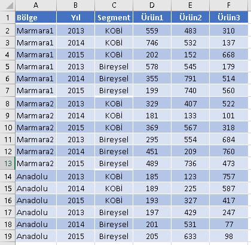
Kriter alanımız da aşağıdaki gibi olsun. Bu 3 hücre de combobox
şeklindedir ve olası değerleri içermektedir. (Kriterler sadece I ve J
kolonunda. K kolonundaki bilgiyi formü içinde ayrıca kullanacağız)
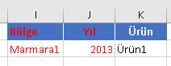
Aradığımız şey: Marmara1 bölgesinin 2013 satışları toplamı olsun.
Formülümüz şöyledir.
=DSUM(A1:F19;MATCH(K2;A1:F1;0);I1:J2)
Farkettiyseniz Field parametresini dinamik bir
şekilde hesapladık, yani bunu
kullanıcıya manuel girdirtmek yerine K2 hücresindeki combobox'tan
seçtirdik.
Bu arada bu fonksiyonların joker karakterleri de desteklediğini söylemiştik. Kriter
alanını aşağıdaki gibi girersek, Marmara ile başlayan tüm bölgeleri
işleme sokar.
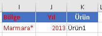
Diğer önemli Veritabanı fonksiyonları DCOUNT, DAVERAGE, DMIN
VE DMAX'tır. Bunların D'siz versiyonlarını biliyorsanız ne
işe yaradıklarını anlamışsınızdır, bilmiyorsanız önce onlara
gözatmanızı tavsiye ederim. Tekrardan kaçınmak adına bunlarla
ilgili örnek yapmaya gerek duymuyorum.
1 Boyutlu tablolarda çalışmak
Aşağıdaki gibi matrisyel formda ama yatay ekseni tek kolondan oluşan tablolarla
çalışmak oldukça kolaydır. Bunlarda dikey eksen bir kolondan da birkaç
kolondan da oluşabilir.
Bunlara, yatay eksende 1 kolon olduğu için 1 boyutlu tablolar
diyoruz. Aslında bunu sadece ben diyorum. MSDN dökümantasyonunda yer alan
bir sınıflandırma değil yani. Şimdi bu tür tablolarda ne tür işlemler
yapabiliyoruz, karşılaştırmalı olarak göreceğiz.
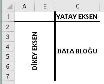
Önemli Not (2 boyutlu tablolar için de geçerlidir)
Aşağıda göreceğiniz gibi, elde edilmeye çalışılan şey ve bunlara
ulaşılan yöntem sayısı çok fazla olabilir. Ben elimden geldiğince çok
farklı kombinasyonlara değinmeye çalıştım. Ör: Yöntem olarak SUMPRODUCT'ı
vermişimdir ama bunun ";" versiyonu da "*" versiyonu da var, hatta bir
de VEYA
kriteri için "+" operatörlü kullanımı var. Ayrıca çoklu kriterlerin
yatay eksenden oluşan bir alandan mı(ör:J1:L1), dikey eksenden oluşan
bir alandan mı(ör:J1:J3), yoksa formüle manuel mi(ör:{1;2;3}) girilmesi de
kombinasyon sayısını artırmaktadır.
O yüzden tüm kombinasyonları buraya almak çok mantıklı olmayacaktır.
Bunun yerine yöntemlerde çeşitlendirme yapmayı tercih ettim. Mesela
SUMPRODUCT'ın çoklu kriter örneğini manuel girerken, başka bir fonksiyon
alternatifinde yatay eksenden aldım, başkasında ise dikeyden aldım, böylece gereksiz
tekrardan kaçınmaya çalıştım. Gerçi buradaki örneklerin bulunduğu excel
dosyayı indiriseniz orada bu tekrarların bazısını görebilirsiniz, ama
orada bile tüm kombinasyonlar(tahminimce 100ün üzerinde) yok. Bu sayfayı tamamen hatmettikten sonra
gereken kombinasyonları siz duruma göre oluşturuyor olabilmelisiniz.
Ayrıca yukarda belirtildiği gibi SUMPRODUCT'ın alternatifi olarak SUM'ın
"*"'lı dizi formülünü ise kullanmaktan tamamen kaçındım, örnek dosyada
da bulamayacaksınız. Yukarıda sadece bir kere verdim. SUMPRODUCT'lı her case için
teorik olarak onu da
kullanabileceğinizi bilmenizi isterim(ama SUMPRODUCT varken çok da gerek
yok açıkçası)
Son olark burada yapacağımız neredeyse tüm örneklerde kriterler
Data Validation'la
yapılmış comboboxlar içinden seçiliyor olacakır. Zira kriter değiştirmek
istediğimizde formülün içinde bunu değişitrmek yerine kriterin dinamik
olarak bir hücreden beslenmesi daha profesyonelcedir. Bununla beraber
bazı örneklerde özellikle çoklu değer girilmesi gereken durumlarda manuel
kriter girişi de yapılacaktır.
A)Dikey eksendeki kolon(lar)da aranan şey 1 adetse
1)Dikey eksende tek kolon var
Eğer, aranan değer bir kez geçiyorsa VLOOKUP veya
INDEX/MATCH ile arana
değer bulunurken, birden çok kez geçiyorsa SUMIF kullanılarak eşleşenlerin
toplamı alınır. Bunlarla ilgili örnekler
Lookup
fonksiyonları ve
istatistiki fonksyionlar sayfalarında fazlasıyla yapılmıştır.
2)Dikey eksende çok kolon var
Dikey eksendeki aranan değerler bir kez geçiyorsa INDEX-MATCH'in dizi
formülü olmak zorundadır. Bunu da yine
Lookup
fonksiyonları sayfasında çok kriterli vlookup olarak görmüştük.
Eğer aranan kriterler çok kez geçiyorsa o zaman birkaç alternatifimiz
var. Aşağıdaki örnek üzerinden gidelim.
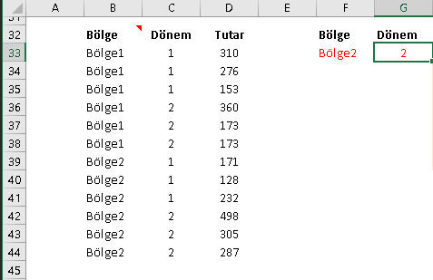
Bölge2'nin(F33 hücresinde) 2.dönem(G33 hücresinde) satışlarını
toplayalım. Formül anlaşılırlığı açısından aşağıda göreceğiniz üzere
sırasıyla şu Name tanımlamalarını yaptım: bölgeler, dönemler
ve tutarlar.
=SUMIFS(Tutarlar;bölgeler2;F33;dönemler;G33) //2007 sonrası için SUMIFS
{=SUM(IF((bölgeler2=F33)*(dönemler=G33);Tutarlar))} //SUM+IF dizi formülü
=SUMPRODUCT(--(bölgeler2=F33);N(dönemler=G33);Tutarlar) //SUMPRODUCT ";" ile
=SUMPRODUCT((bölgeler2=F33)*(dönemler=G33)*Tutarlar) //SUMPRODUCT "*" ile
=DSUM(alanfordsum;3;F32:G33)
B)Dikey eksendeki kolon(lar)da aranan şey 1'den çoksa
Dikey eksende birden çok şey aramak, konuşma dilinde "ve", formül
dilinde ise VEYA şeklinde algılanır ve eğer ayrı ayrı formüle girecekse
"+" işaretiyle girer. Ayrı ayrı girmeyip dizi(manuel veya hüre gurubundan)
olarak da girebilir; o zaman fakrlı yöntemler işletilir.
1)Dikey eksende tek kolon var
Aşağıdaki tablo üzerinden gidecek olursak, öncelikle dikey eksende iki
kolon olduğunu görüyorsunuz ancak biz tek kolon üzerinden işlem
yapacağımız için bunu tek kolonlu bir dikey eksen gibi düşünebilirsiniz.
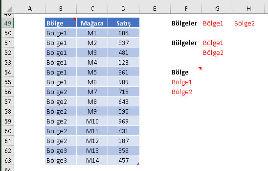
Şimdi böyle bir tabloda Bölge1 ve Bölge2nin satılarını toplamak
istiyoruz. Birçok alternatif olmakla birlikte biz burada birkaçını
vereceğiz, kalanına Excel dosya içinden bakabilirsiniz.
=SUM(SUMIF(Tablo[Bölge];{"Bölge1";"Bölge2"};Tablo[Satış])) //Bölge kriteri manuel
=SUMPRODUCT((Tablo[Bölge]=G49:H49)*(Tablo[Satış]))
=DSUM(Tablo[#All];3;F54:F56)
=SUMPRODUCT(((Tablo[Bölge]=G49)+(Tablo[Bölge]=H49))*Tablo[Satış]) //Formül dilinde VEYA
Bu yöntemlerin genel değerlendirmesi aşağıda yapıldığı gibi, Excel
dosya içinde de her yöntemin artı ve eksikleri belirtilmeye
çalışılmıştır.
2)Dikey eksende çok kolon var
Şimdi ise dikey eksenimizde işlem yapacağımız iki kolon var, ve
ayrıca bu iki kolondan da iki kriter birden seçeceğiz. Gördüğünzü gibi
işler gittikçe zorlaşıyor.
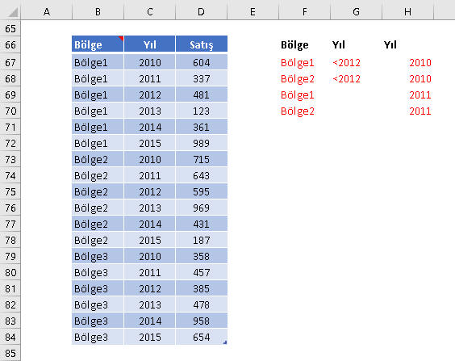
İşler zorlaşıyor ama alternatifler tükenmiyor. Aşağıda yine 1-2
alternatif verilmiş, diğer alternatifler dosya içinde bırakılmıştır.
=DSUM(Tablo9[#All];3;F66:G68)
=SUM(SUMIFS(Tablo9[Satış];Tablo9[Bölge];{"Bölge1";"Bölge2"};Tablo9[Yıl];"<2012"))
{=SUMPRODUCT((Tablo9[Bölge]=TRANSPOSE(F67:F70))*(Tablo9[Yıl]=TRANSPOSE(H67:H70))*(Tablo9[Satış]))}
Gördüğünzü gibi TRANSPOSE kullanmı olan formüllerde ana fonksiyonumuz
SUMPRODUCT olsa bile CSE işlemi yapmamız gerekmektedir.
DSUM'da ise farkettiyseniz 2012'yi iki kere yazmamız gerekti. F67:G67
ile, Bölge1'in 2012'sini alırken, F68:G68 ile de Bölge2'nin 2012'sini almış
oluyoruz. Eğer G68'e 2012 yazmazsak Bölge1in 2012si ile Bölge2nin tüm
yıllarını toplardı. Bunları excel dosyada deneyip görebilirsiniz.
NOT:Ekli dosyadan da göreceğiniz üzere alternatif
yöntemler arasında kötü alternatifler de bulunabilir ve bunlar hiç
denenmemelidir. (Teorik olarak kullanılabilseler bile). Çünkü şuanda bile
2 bölge * 2 dönem=4 kombinasyon varken 3 bölge 3 dönem olduğunda 9
kombinasyon olacaktır ki, bu 9 tane manuel kriter girmek demek olacaktır.
İkili/üçlü sumifler, Sumproduct'ın veya görevi gören "+" operatörüyle
kullanımı bu kötü alternatifler arasındadır.
2 Boyutlu matrisyel tablolarda çalışmak
Aşağıdaki gibi 2 boyutlu matrisyel yapıdaki tablolarla da sık sık çalışıyorsanız
bu kısım tam size göre.
Bu tablolarda dikey eksen bir veya birkaç kolondan oluşabilirken yatay eksen ise
çok kolondan oluşur. Şimdi bu tür tablolarda ne tür işlemler
yapabiliyoruz, karşılaştırmalı olarak göreceğiz.
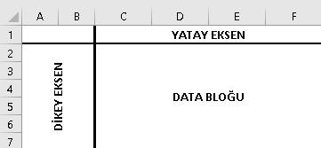
UYARI:1 boyutlu tablolara bakmadan direkt buraya geldiyseniz oradaki "önemli
notu" okumanızı tavsiye ederim.
A)Dikey Eksenin 1 kolondan oluştuğu durumlar
1)Kriter:Dikey eksenden 1 değer, yatay eksenden 1 değer; dikey eksendeki
değer
bir kez geçiyor (Kesişim değeri)
Kesişim bulma örneklerini daha önce
lookup fonksiyonlarını incelerken
görmüştük. Şimdi onlara bir alterantif olarak da SUMPRODUCT geliyor. Tabi
SUMPRODUCT diğerlerinden farklı olarak çok satır ve sütunda kesişenlerin toplamını da
alabiliyor, onları da sonraki maddelere göreceğiz.
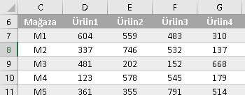
Yukarda M2'nin Ürün3'teki satış rakamını bulmak istiyoruz. Formülümüz şöyle
olacaktır.J8'de Mağaza seçimi, K8'de Ürün seçimi yapılıyor olsun. Ayrıca
formül okunurluğu adına Name'ler kullanılmıştır.
=SUMPRODUCT((Mağazalar=J8)*(Ürünler3=K8)*Tutarlar3)
İlk iki parantezli grubun önüne -- koyduktan sonra F9 yapınca görüntü
aşağıdaki gibi oluyor. Son
parantezli grupta ise değerler var, hepsi birbiriyle çarpılınca yanlızca
2.satır 3.sütundaki değer sıfırlanmadan kalır, o da aradığımız değerdir,
yani 532.
{0;1;0;0;0;0;0;0;0;0;0;0;0;0;0;0;0;0}*{0\0\1\0}
Bir diğer alternatif de SUMIF+OFFSET+MATCH kombinasyonudur.
=SUMIF(Mağazalar;J8;OFFSET(Mağazalar;0;MATCH(K8;Ürünler3;0)))
Mağazalar kolonunda M2'yi arattırıyoruz, toplam işlemini hangi
kolonda yapacağımızı ise Mağaza kolonunu referans verip Ürün3'ün bu
referanstan sonraki kaçıncı
kolonda geçtiğini buldurarak dolaylı şekilde bulduruyoruz. Bunu da bu
sıra numarasını, OFFSET'in ikinci parametresi olarak vererek buldurmuş
oluyoruz.
2)Kriter:Dikey eksenden 1 değer, yatay eksenden 1 değer; dikey eksendeki
değer birden çok kez geçiyor. (Kesişenlerin toplamı)
Diyelim ki aşağıdaki bir tablomuz var. Bölge1'e ait Ürün3 satışları
görmek istiyoruz. (Dikey eksende Bölge-Mağaza olmak üzere 2 kolon olmasına rağmen biz sadece
Bölge kolonu üzerinden işlem yapacağımız için bu tablo bu kategoriye uygundur)
Şimdi Alternatiflerimize bakalım.
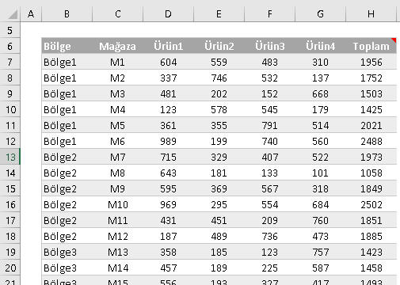
Burada klasik SUMIF yapabiliriz. Tabi ürün adı değişken olacağı için
OFFSET-MATCH ikilisinden yararlanırız. Baz olarak Mağazayı alıp bunun kaç
kolon sağında olduğunu dinamik bir şekilde buldurabiliriz.
J12'de Bölge, K12'de ürünlere ait Comboboxlar olduğu gözününde
bulundurulursa;
=SUMIF(bölgeler3;J12;OFFSET(Mağazalar;0;MATCH(K12;Ürünler3;0)))
Bir diğer alternatif de SUMPRODUCT kullanmak olacaktır
=SUMPRODUCT((bölgeler3=J12)*(Ürünler3=K12)*Tutarlar3)
Burada da yaptığımız normal kesişim formülü yazmak gibidir aslında, sadece birden
fazla eşleşme olduğunda sonuçlar toplanmış oluyor, o kadar.
Ve tabiki yine Veritabanı fonksiyonları kullanılabilir.
=DSUM(B6:G24;MATCH(K12;B6:G6;0);J11:J12)
3)Kriter:Dikey eksenden 1 değer, yatay eksenden çok değer; yatay
eksendeki kriterler yanyana değil(dikey eksendeki değer 1 veya daha çok kez
geçebilir)
2.maddedeki tabloyu kullanacağız. Bu tabloda Bölge2'nin Ürün2 ve ürün4
toplamını bulacağız. Böyle saçma şey olur mu demeyin, olur. Ör:Bankacılık
dünyasından bir örnek düşünecek olursak Vadeli TL ve Vadesiz TL olabilir,ve
biz Toplam TL mevduat bulmak
istiyor olabiliriz .
Bu tabloda kriter alanımızın aşağıdaki gibi olduğunu gözönünde
bulunduralım.
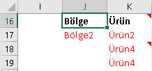
Şimdi, hatırlayalım, konuşma dilindeki "Ürün2 ve Ürün4"'ün formül dili karşılğı
Ürün2 VEYA Ürün4 idi. VEYA operatörümüz de + işaretiydi. O halde
ilk formülümüz aşağıdaki gibi
olacaktır.
=SUMPRODUCT((bölgeler3=J17)*((Ürünler3=K17)+(Ürünler3=K18))*Tutarlar3)
Bir diğer alternatif de Ürün2 ve Ürün4 toplamından oluşan yardımcı kolon
oluşturmaktır ama bu çok kötü bir alternatiftir. Zira burdaki amacımız
yardımcı kolon oluşturmadan işlerimizi halletmektir, üstelik yardımcı kolonlar
da genelde daha anlamlı içeriğe sahiptirler; tüm ürünlerin toplamı gibi
mesela. İki
ürünün toplamından oluşan bir yardımcı kolon pek iyi bir fikir değil.
Başka bir alternatif ise aşağıdaki gibi olabilir
{=SUMPRODUCT((bölgeler3=J17)*(Ürünler3=TRANSPOSE(K16:K19))*(Tutarlar3))}
Burada dikkat ettiyseniz ürünleri alırken sadece iki ürünü
seçemiyoruz. Eğer yatay kolondan ürün eşleştirmek istiyorsak tüm
ürünlerin sırasına ve sayısına uygun bir kriter dizesini formüle
sokmalıyız. Burda 4 ürün var ve sırası Ürün1,Ürün2,Ürün3 ve Ürün4
şeklinde. Biz de K16'da sanki Ürün1, K18'de de sanki Ürün3 varmış gibi
düşünerek 4 hücrelik bir alan seçmek durumundayız, bunlardan sadece K17 ve
K19'dakiler eşleşeceği için doğru sonucu elde etmiş oluruz. Bu sırada
kriter listeleri hazırlamak zahmetli olabileceği için uygulaması biraz zor
olabilir ama kriterleri tek tek girmemek adına da kolaylık sağlar.
Dikkat edilecek bir diğer husus da, kriteler dikey eksende olduğu
için bunları TRANSPOSE ile çevirmemiz
gerektiğidir.
Son yöntemimiz yine SUMPRODUCT ile. Bunda da kriterler elle girilir.
Eğer sabit bir fomrül olacaksa ve comboboxlardan değiştirme ihtiyacı
olmayacaksa bu yöntem de uygulanabilir.
=SUMPRODUCT(--ISNUMBER(MATCH(Ürünler3;{"Ürün2";"Ürün4"};0))*(bölgeler3=J17)*(Tutarlar3))
Bunda ürünler MATCH ile eşleşiyormu diye kontrol edilip, eşleşenlere
eşleşme sırası, eşleşmeyenlere N/A atanmış olur. Sonra bunlar ISNUMBER ile TRUE
ve FALSE değerlerine, son olarak da -- ile 1 ve 0'a dönüştürülür. Bunların hepsini aşama aşama aşağıda
görebilirsiniz.
MATCH'li kısım-->{#N/A\1\#N/A\2}
ISNUMBER'lu
kısım-->{FALSE\TRUE\FALSE\TRUE}
--'li kısım-->{0\1\0\1}
4)Kriter:Dikey eksenden 1 değer, yatay eksenden çok değer; yatay
eksendeki kriterler yanyana(dikey eksendeki değer 1 veya daha çok kez
geçebilir)
Komşu hücrelerin toplanması sözkonusu olduğunda bir VE işlemi yoktur, tek
bir alan(range) işleme girmektedir. Aslında 3.maddeden farklı bir yöntem
bulunmamaktadır. Ordaki 3 yöntem aynen uygulanabilir. Yani özeetle komşu olma durumuna
özgü ayrı bir yöntem bulunmamaktadır.
Bu maddenin özel durumu olarak "tüm ürünler" düşünülebilir. Yani Bölge2'nin 4
ürün toplamını almak istiyoruz diyelim. Bunun için Yardımcı kolon olarak
en sağda bi toplamı kolonu oluşturulup basit SUMIF yapılabilir. Acil
çözümler için oldukça geçerlidir. Ancak kalıcı ve şık çözümler için yine
SUMPRODUCT'a ihtiyacımız vardır.
J27'de Bölge comoboboxı olduğunu düşünürsek,
=SUMPRODUCT((bölgeler3=J27)*Tutarlar3)
Yeri gelmişken önemli bir hususu belirtmekte fayda var: SUMPRDOCUT'ın çok kolonlu durumlarda sadece"*"lı versiyonunun kullanılabilmesidir. ";"li versiyonu hata verir.
Bir diğer önemli husus da SUMIF'in çok kolonlu kullanımında hata
vermemesi ancak yanlış sonuç
döndürmesi, çünkü sadece ilk kolonun sonucunu
döndürür.
=SUMIF(Table14[Yıl];2010;Table14[[Ürün1]:[Ürün4]]) //hatalı sonuç
B)Dikey Eksenin çok kolondan oluştuğu durumlar
Dikey eksende birden çok kolondan seçim yapmak konuşma dilinde iyelik
eki, formül dilinde ise VE kriteri olup bununla
ilgili ne yapılacağını dizi formülleri bölümünde görmüştük. Yukardaki 4 madde
için 4 farklı versiyon yapılabilir ama biz burada sadece bir tanesini
yapacağız.
Şimdi aşağıdaki tabloyu örnek alalım.
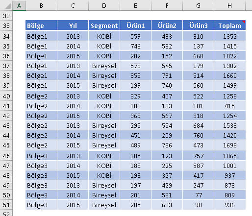
Bölge 2'nin 2014teki Ürün1 ve Ürün3 toplamını arıyoruz. Kriter bölgesi
aşağıdaki gibidir.
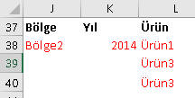
Burdaki
alternatiflerimiz şöyledir:
=SUMPRODUCT((bölgeler4=J38)*(yıllar4=K38)*((ürünler4=L38)+(ürünler4=L39))*tutarlar4)=SUM(IF(Table14[Bölge]="Bölge2";IF(Table14[Yıl]<2013;Table14[[Ürün2]:[Ürün3]]))) //Çok kriter olursa çok sayıa içiçe if olacağı için yazımı zorlaşır
=SUMPRODUCT((bölgeler4=J38)*(yıllar4=K38)*(ürünler4=TRANSPOSE(L38:L40))*tutarlar4)
C)Dikey Eksenden çok değer seçimi
Bu kategori için de sadece tek bir örnek yapılacak olup yukardaki
örneklere göre çeşitlendirme yapılabilir. Ekli dosyadan da diğer
alternatifleri görebilir, orada bulunmayan alternatifler üzerinde kendiniz
de çalışarak pratik yapabilirsiniz.
Yukarıdaki son tabloyu örnek alalım. Burda Bölge1 ve Bölge2'nin 2014
toplamını bulmak istiyoruz. İki alternatifimiz şöyle olacaktır.
(Q49:Q50'de Bölge1 ve 2 var, R49'da 2014)
=SUMPRODUCT(--ISNUMBER(MATCH(bölgeler4;Q49:Q50;0))*(yıllar4=R49)*tutarlar4)
=SUM(SUMIFS(H34:H51;bölgeler4;Q49:Q50;yıllar4;R49)) //SUMIFS ile yardımcı kolon
Artık iyice kanıksamış olduğunuzu düşündüğüm için fomrülü tek tek
açıklamaya gerek duymuyorum.
D)Farklı kolonlarda VEYA işlemi uygulamak
İlginç bir durum da VEYA(formül diliyle) kriterinin farklı kolonlarda
uygulandığı durumlardır. Şimdiye kadar VEYA kriterini hep aynı kolon
üzerinde uyguladık; Bölge1 VEYA Bölge2, Ürün1 VEYA Ürün2 demek gibi.
Aşağıdaki örneklerde ise farklı kolonlarda VEYA şartı aranacak.
1)Kesişmeyen VEYA'lar
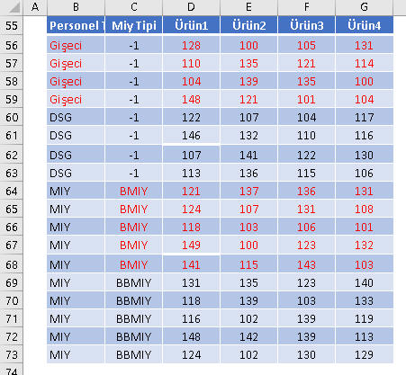
Bu tabloda Personel Tipi=Gişe olan veya Miy tipi BMIY olan kişilerin
4 üründeki toplam satışını arıyoruz. Bunda, önceki örneklere göre çok
fakrlı bir durum yok. VEYA koşulumuzu "+" operatörü ile kurgulayarak
formülümüzü yazalım.(I57'de Gişeci, J57de BMIY yazmakta)
=SUMPRODUCT(((perstip=I57)+(miytip=J57))*satış)
2)Kesişen VEYA'lar
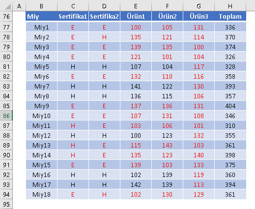
Bu sefer iki sertifikadan herhangi birine sahip Miylerin toplam
satışlarını bulmak istiyoruz. Bunda da yardımcı kolonlar kullanılabilir,
hatta iki sertifkanın yanına bir kolon daha açılıp, "ikisi de E ise 1
değilse 0" denip, SUMIF uygulanabilir, ama bunlar bizim için çirkin
yöntemler. Biz daha şık olan alternatife bakalım. Ama öncesinde bir
üstteki yöntemin aynısını uygularsak nasıl hata yapacağımızı görelim.
=SUMPRODUCT(((cert1="E")+(cert2="E"))*certsatış)
Eğer iki operatörün toplandığı parantezi seçip F9 yaparsak sonucun
{2;1;2;2;0;2;0;0;2;2;1;0;1;1;2;0;0;1} olduğunu görürüz. Evet elimizde
0/1den başka 2'ler de olduğunu görüyoruz, çünkü aynı anda iki kriteri
sağlayan satırlar 2 döndürüyor. Bizim bunları 1'e döndürmemiz lazım.
Bunun için de belki bir önceki sayfada gördüğünüz ama belki hiç dikkat
etmediğiniz, ve belki de görüp "işime yaramaz dediğiniz" SIGN
fonksiyonu yardımımıza koşar. SIGN ile sayıların işaretini alıyorduk,
pozitifler 1, negatifler -1, 0'lar 0 oluyor, tam da aradığımız şey.
=SUMPRODUCT(SIGN((cert1="E")+(cert2="E"))*certsatış)
Genel değerlendirme
Şimdiye kadar gördüğümüz üzere belli bir amacı yerine getirmek için
çeşitli alternatifler var. Kimisi şık çözümler sunarken kimisi şık olmayan
ama daha hızlı çözümler sunabilmekte. Şimdi, hangi durumlarda hangi
alternatifleri kullanabileceğimizin bir özetini vermek istiyorum.
- Mümkün olduğunda Excel versiyonunuzun desteklediği yerel fonksiyonaları kullanın.
SUMIFS(2007 ve sonrası), MINIFS(2016 ve sonrası) gibi
- Ayrı bir kriter alanı yaratmak sıkıntı değilse bunu yaratın ve
Database fonksiyonlarını kullanın. Özelikle Data Validation
ile
comboboxlardan yararlanacaksanız bu fonksiyonlar çok kullanışlı
olmaktadır. Çünkü hem daha
hızlı çalışırlar hem de yazılışları basittir. (Hız etkisini bir iki
hücreli çalışmalarda hissetmeyebilirsiniz ama çok fazla dizi formülünüz
varsa bunları Database fonksyionlarına çevirmenizi öneririm). Buların en
önemli eksikliği çok kolon üzerinde işlem yapamıyor oluşlarıdır.
Kriterler manuel girilecekse Database fonksiyonları kullanılamaz.
- Yatay eksenden çok kolon üzerinde işlem yapılacaksa SUMPRODUCT
uygun alternatiftir.
- Database Fonksiyonu kullanılamayan durumlarda mümkünse
SUMPRODUCT kullanın, SUM-dizi tarzıdaki dizi formüllerini terih
etmeyin.
- TRANSPOSE kullanımı veya bir şekilde dizi üreten diğer durumlarda
formül bitiminde CSE yapılacaksa SUMPRODUCT yerine dizi formüllerini
kullanabilirsiniz.
Çeşitli örnekler
0 hariç en küçük sayı
Yapmamız gerek şey, 0'dan büyük hücreleri dizi şeklinde elde edip bunlara
MIN işlemi uygulamak.
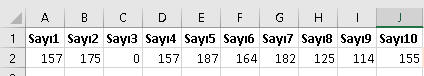
{=MIN(IF(A2:J2>0;A2:J2))}
Bunun bir altenratifi de SMALL ile dizi formülü yapmadan da aşağıdaki
gibi yazılabilir. 0'dan kaç tane var diye bakıyorum, çıkan sonucun bir
fazlası x olsun. x. küçük elemanı getir diyorum.
=SMALL(A2:J2;COUNTIF(A2:J2;0)+1)
En küçük 3 elemanın kendisi ve bunların toplamı
Bu örnekte çoklu hücre seçimi yaparak 3 hücreye en küçük 3 elemanı
gireceğiz.
{=SMALL(A2:J2;COLUMN(INDIRECT(1&":"&3)))} //Kolon sıra numarası ile
{=SMALL(A2:J2;COLUMN(INDIRECT("A:C")))} //Kolon başlığı olan harflerle
Bu 3 elemanın toplamını ise ya bu 3 sonucu toplatarak buluruz veya tek
seferde yapmak istersek aşağıdaki formülü gireriz.
{=SUM(SMALL(A2:J2;COLUMN(INDIRECT("A:C"))))}
Farkettiyseniz değerleri ayrı ayrı yazdırıraen hem 1:3 hem de A:C
şeklinde girebiliyoruz ancak toplam aldırırken sade A:C versiyonu işe
yaramakta.
Hatalı değer içeren alanlarda toplama yapmak
Bildiğiniz gibi bir kolonda/satırda N/A gibi değerler varsa SUM
fomrülnün sonucu da N/A olmakta, aşağıaki durum çubuğunda da değer
görünmemektedir. Adetlerde sorun yok, nları direkt sayar, ama hatalı kaç
kayıt var bunu görmek için dizi formül yazmmız lazım. Bunları da
aşağıdaki gii
=SUM(IF(ISERROR(D9:D11);1)) //Hatalı kayıt sayısı
=SUM(IF(ISERROR(D9:D11);0;D9:D11)) //Hatasızların toplamı
Bir alandaki benzersiz değerleri saydırmak
Yine yukarıdaki tabloyu kullanalım.
Burada toplam 10 sayı var, bunlardan 157 iki kere geçiyor, o yüzden
benzersiz sayı adedi 9'dur. Bunu bulmak için izleyeceğimiz yol FREQUENCY
formülünü dizi formülü şeklinde kullanıp her rakamın kaç kez geçtiğini
bulmak, sonra bunların 0'dan büyük olup olmadığını kontrol edip
TRUE/FALSE döndürmek, en sonunda bu TRUE/FALSEları da -- ile 1/0'a
dönüştürüp toplamak olacaktır.
Tabi burada FREQUENCY'nin işleyişini iyi bilmek gerekiyor. İstatistik
formüllerinde gördük ki, bu fonksiyon değerlerin sıklığını ele alırken,
bir değeri ilk kez gördüğü yerde onun frekansını yazar,
sonrakilerde 0 yazar.
{=SUM(--(FREQUENCY(A2:J2;A2:J2)>0))}
Formülün çözümlemesi şöyle:
* FREQUENCY kısmı: {2;1;1;0;1;1;1;1;1;1;0} dizisini döndürü
* Dizi>0:
{TRUE;TRUE;TRUE;FALSE;TRUE;TRUE;TRUE;TRUE;TRUE;TRUE;FALSE} döndürür
*
--'li kısım: {1;1;1;0;1;1;1;1;1;1;0} döndürür
Sonuç:9
Bu işlemin bir diğer alternatifini de bir alt örnekte göreceğiz
Bir alandaki benzersiz değerleri saydırmak-2
Diyelim ki şubelere mevduat spread hedefi vereceğiz. Yöneticiniz
sizden 800 şube için en fazla 8 çeşit spread hedefi vermenizi istemiş
olsun. Yani şubeler öyle gruplanalacak ki ens onunda bu 8 grup hedften
birinde yer alacaklar.
Örneği basitleştirmek adına biz 20 şube baz alalım. İlk olarak da
aşağıdaki gibi bir çalışma yaptınız, şimdi kontrol etmek istiyoruz, kaç
çeşit hedef var diye.
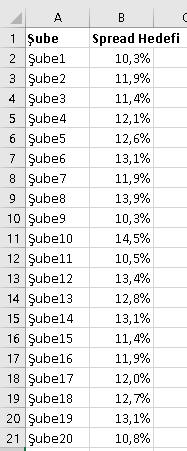
Bunu yapmanın iki kötü yolundan biri Remove Duplicates yapıp, diğeri
de Pivot table uygulayıp saymak olacaktır. Kötüler çünkü ilkinde
isediğiniz sayıya gelene kadar her defasında işlemi yenilemeniz,
ikincisinde ise pivot tabloyu refresh etmeniz gerekir.
İyi yöntemler ise bir hücreye formül yazmak olacaktır. FREQUENCY ile
dizi formülü yazmayı önceki örnekte görmüştük, tekrar yazmayacağız ancak
ekli dosyada bulabilirsiniz. Diğer dizi formülü ise aşağıdaki gibi
olacaktır
{=SUM(1/COUNTIF(B2:B21;B2:B21))}
Formülü çözümleyelim
* COUNTIF'li kısım: {2;3;2;1;1;3;3;1;2;1;1;1;1;3;2;3;1;1;3;1}
*
1/COUNTIF:{0,5;0,333333333333333;0,5;1;1;0,333333333333333;0,333333333333333;1;0,5;1;1;1;1
;0,333333333333333;0,5;0,333333333333333;1;1;0,333333333333333;1}
*
Sonuç:14
Formülün mantığı şöyle: İlgili alanı kendisiyle COUNTIF'e tabi
tutarak her değerden o alanda kaç tane olduğunu buluyoruz. Sonra farklı
değerlerin toplamının 1 olması için bunların 1'e bölünmüş halini
alıyoruz. Mesela 11,9'dan 3 tane var(kalın kırmızılı olanlar). Bunları
toplayınca 1 yapıyor. Diğerlerini de aynı şekilde toplayınca 1 yapar.
Tek olanlar zaten 1 olduğu için 1/1=1 yapıyoruz. Sonuç olarak hepsini
toplayınca da aradığımız sonuç olan 14'e ulaşıyoruz.
Bir alandaki en uzun metin
Diyelim ki bir alanda girilmiş çeşitli açıklamalar
var. Siz bunlardan en detaylısını yani en çok karatkter içeren olanı
arıyorsunuz.

Formülümüz aşağıdaki gibidir.
{=OFFSET(A2;MATCH(MAX(LEN(A2:A5));LEN(A2:A5);0)-1;0)}
Bu formülün çözümlemesi de şöyledir
* Dizi1=LEN(A2:A5): {8;10;13;9}
* X=Max(Dizi1): 13 //Bunları
en büyüğü
* Y=MATCH(X;Dizi1;0): 3 //13'ün bu dizdeki sırası
*
OFFSET(A2;Y-1;0) //A2'den 2 satır aşağı
* Sonuç:Açıklama
1231
RANKIF ve RANKIFS
Bunu daha önceden COUNTIFS ile yapmıştık, şimdi aynısını SUMPRODUCT
ile yapmakta.
Yamak istediğimiz şey her bölgenin şubelerini hacimsel büyüklüğüne
göre boy sırasına dizmek.
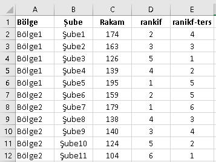
=SUMPRODUCT((bölge=A2)*(C2<rakam))+1
NOT:Bu yöntem de tıpkı COUNTIFSte olduğu gibi daha
ok koşul eklenerek RANKIFS
olarak da çalışabilir.
En yüksek/düşük x Rakam Toplamı - En yüksek/düşük x
rakam hariç Toplam
Aşağıdaki listeden 2 nolu şubenin Para çekme işlemindeki en düşük 3
işleminin toplamını almak istiyoruz.
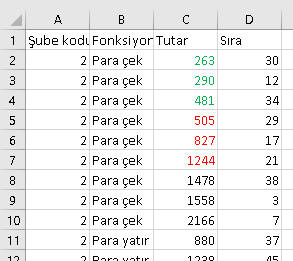
Formülümüz şöyledir. (F2'de şube kodu olarak 2, G2'de de "Para çek"
yazıyor)
{=SUM(SMALL(IF(A2:A161=F2;IF(B2:B161=G2;C2:C161));ROW(INDIRECT(1&":"&3))))}
Çözümlemesi şöyle
* Dizi1:IF(A2:A161=F2;IF(B2:B161=G2;C2:C161)) ile 2 nolu şubenin
Paraçek işlein olduğu listeyi elde ediyoruz, yani C2:C10 arası döner.
* Dizi2:ROW-INDRIECT'li kısım:{1;2;3}
*
SMALL(Dizi1;Dizi2):{263;290;481}
* Sonuç:1034
Bir de en düşük/yüksek 3 işlem hariç toplam ne kadar diye bakalım.
(F7=2, G7=Para çek)
=SUMIFS(C:C;A:A;F7;B:B;G7)-SUM(SMALL(IF(A2:A161=F7;IF(B2:B161=G7;C2:C161));ROW(INDIRECT(1&":"&3))))-SUM(LARGE(IF(A2:A161=F7;IF(B2:B161=G7;C2:C161));ROW(INDIRECT(1&":"&3))))
Burda yapılan da SUMIFS yaparak full toplam almak ve ondan bir
üstteki formülü ve bunun LARGE'lı versiyonunu çıkarmaktır.
Gördüğünüz gibi oldukça uzun bi formül oldu bu. Açıkçası yazması bile
meşakkatli bu formülün çözümlemesi hiç girmek istemiyorum, bunu bu
noktada artık sizin yapabileceğinizi düşünüyorum. Bu arada bunun bir de
SUMPRODUCT'lı versiyonu var, ona ekli dosyadan bakarsınız.
Evet, uzunca bir konunun sonuna geldik. Umarım faydalı olmuştur. Her
konuda olduğu gibi bunda da tam kavrayış için bol tekrar ile
pekiştirilmesi gerekmektedir.
TEST SORULARI
Son Sorumuz şuymuş:Bir metindeki tüm noktaları yoketmek istiyorsunuz. Hangi fonksiyonu kullanırdınız?
Soru:
A şıkkı:
B şıkkı:
C şıkkı:
D şıkkı:
Doğru Cevap
Etiketler
İlişkili konuyu seç
205643
Label
* Sorulara verilen yanlış cevaplardaki esprili yorumlarım için hoşgörünüze sığınıyorum.
* Test ve Ödevlerdeki bazı detaylar burada anlatılmamış olabilir. Bunları kendiniz araştırıp bulmalısınız.
* Birden çok konuya ait içeriği olan ödevler var. Algoritmik açıdan bakıldığında o an en uygun konuya adreslenmiştir.
Dikkat! Bir soruya cevap verdikten sonra geri dönemezsiniz.